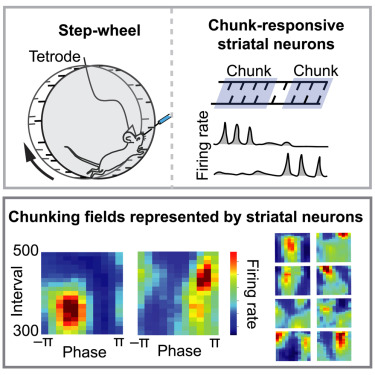
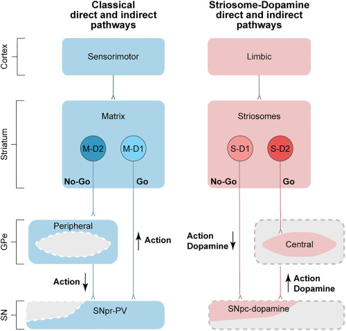
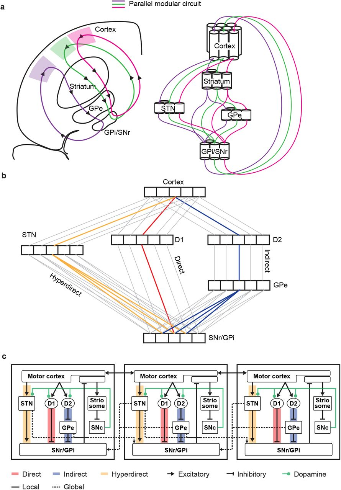

Kojiro Hirokane
Postdoctoral Researcher @ MIT
Passionate about unraveling the complexities of the brain. My research focuses on the intersection of basal ganglia circuits, dopamine dynamics, and motor behavior.
Passionate about unraveling the complexities of the brain. My research focuses on the intersection of basal ganglia circuits, dopamine dynamics, and motor behavior.


Developed a behavioral paradigm in which mice execute complex, continuous movements. Demonstrated the emergence of rhythmic motor chunking and identified striatal representations of rhythmic movement parameters. Built a dual-reservoir model in which two recurrent networks predict each other, reproducing dynamics similar to those observed in the brain.
Emergence of rhythmic chunking in complex stepping of mice, K Hirokane et al., iScience, 2023

Identified parallel striosomal direct (D1) and indirect (D2) pathways that target dopamine neurons, expanding our understanding of basal ganglia function beyond the canonical direct-indirect pathway model.

A neural network model utilizing horizontally tiled cortico-basal ganglia modules. Architectural differences across pathways facilitate temporal-difference-error computation.
This work extends predictive coding into a more biologically plausible architecture that enables multiplex circuit sharing. We identified a learning-driven weight-alignment phenomenon, which we term "Loop Alignment," and provide mathematical and computational evidence for why this extension works.